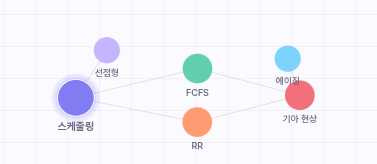

간단한 질문
현재 수준 진단
AI가 내 이해도를 파악하고, 프로젝트별 지식 그래프를 쌓아가며 지금 나에게
필요한 설명을 이어주는 AI 튜터 서비스입니다.
간단한 질문
현재 수준 진단
맞춤 설명
개념별 난이도 조절
지식 그래프
학습 흐름 시각화
단순히 답을 알려주는 것이 아니라, 업로드한 자료에서 개념을 추출하고 질문을 통해 현재 이해도를 확인한 뒤
부족한 개념부터 자연스럽게 이어 설명합니다.
최소 질문으로 현재 학습 상태를 확인하고, 이해·추가 학습·미진단 개념을 구분합니다.
스택(Stack)의 동작 방식으로 올바른 것은?
C. 마지막에 들어온 데이터가 먼저 나옵니다.
진단 결과와 대화 맥락을 반영해 너무 쉽지도 어렵지도 않은 설명을 제공합니다.
운영체제, 자료구조처럼 프로젝트별로 학습한 개념과 관계를 그래프로 볼 수 있습니다.

대화에서 충분히 다룬 개념을 짧은 퀴즈로 점검하고, 헷갈린 선택지는 바로 피드백합니다.
스택(Stack)에 대한 설명으로 옳은 것을 모두 고르세요
자료 업로드부터 맞춤 설명까지 4단계로 완성됩니다.
PDF 강의자료나 정리본을 업로드하면
AI가 학습 주제를 파악합니다.
몇 가지 질문으로 현재 이해도와
부족한 개념을 확인합니다.
진단 결과를 바탕으로 내 수준에 맞춘
답변을 제공합니다.
학습한 개념과 관계를 그래프로 확인하고
다음 흐름을 잡습니다.